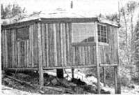

My wife and I were convinced-long before we finally bought our 40 acres in the Oregon woods-that the Navaho hogan would be close to the ideal home for us. Such structures are round, for maximum use of available floor space, and they have the added advantages of vertical walls. Better yet, the building site we selected on our new property was on a hillside ... and would allow us to incorporate a half-basement into the home without digging!
We began our "home in the round" by drawing a 24-foot circle and digging eight equally spaced postholes around its circumference. Then we searched the forest for supports and ceiling poles and selected fallen rot-free trunks ... as well as still solid, but dead, standing trees.
Next, we determined the length of our foundation columns by adding our planned 7-1/2-foot ceiling height to the distance the slope would drop for each post. These eight upright pillars-which formed the supports for the floor, walls, and roof-were set in cement (though we now believe gravel would have better preserved the wood and, because of this, might have been a superior material for the purpose).
To begin the floor, we started at the shortest vertical post and-using a level-installed a horizontal ring of poles. Then, with a thick foundation log in the center of the interior space, we filled in the floor stringers (largely made of cut timber from an old barn) in a spider web fashion. We wanted to provide some shade for our future labors, so we decided to put up the roof next. Our design, we think, is unique. Like the traditional hogan's roof, it uses no center supports, but we also believe that it uses less material.
To start the roof, we nailed poles between the tops of the foundation posts to form an octagonal ring and continued upward from there ... making each ring smaller and higher than the last. Every new circle was placed in such a way that its poles would start and end near the centers of the timbers in the previous ring. (And-to keep the logs from rolling-we flattened their ends with an axe.)
As soon as it was feasible, we switched from octagonal to square "rings". (Otherwise, the roof would have turned into a "smoke stack".) When we reached about a four-foot square, we installed a trap door, and covered the logs with old barn siding.
There were, of course, a lot of spaces to fill between the boards and logs. We solved this problem with strips of cedar bark, which were tacked into the cracks. For insulation and more smoothness, we piled on two pickup loads of sawdust chips ... just as thickly as possible. Then-to keep the rain out-we attached eight boards from the center of the roof out to each foundation post and nailed odd lots of roll roofing ($16 worth) to these planks in eight separate sections.
Since the roof seemed heavy, we put the wall logs in vertically for additional support. Luckily, there was an old, brokendown cabin not far away that supplied just enough nice, gray logs for the job.
The cracks between the logs were stuffed with strips of foam rubber salvaged from the dump. And, over the foam, we nailed wood chinking from the tumbledown log cabin.
So far, we are very pleased with and proud of our $90 home. Using all hand tools, it took my wife and me five months to build it. (With more help and a chain saw, the whole thing could have been completed in a month or less.)
As you can see, our log structure was definitely a bargain (especially when you consider what most folks have to spend to get a roof over their heads). And, frankly, we wouldn't trade our cozy mini-home in the wilderness for one of those mass-produced crackerboxes that cost thousands of dollars more!
|
 PHOTOS BY THE AUTHOR |
|
|